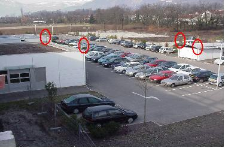
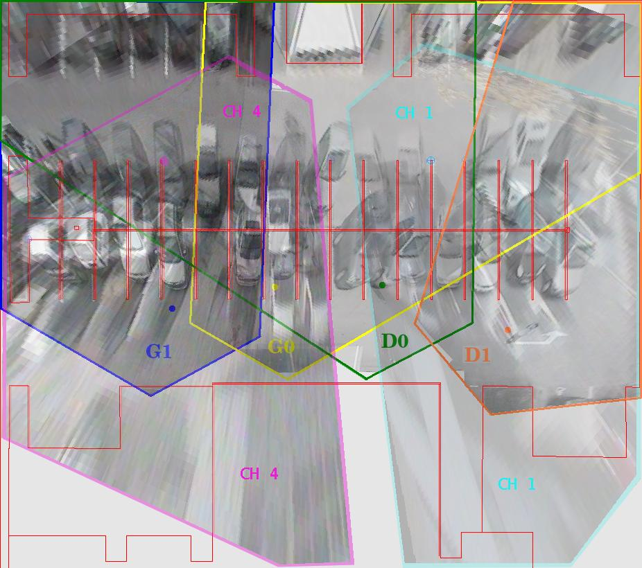
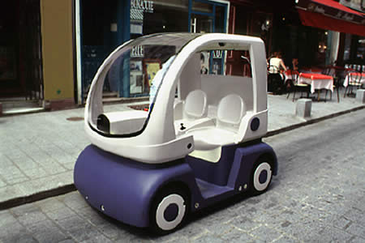
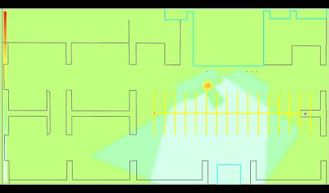
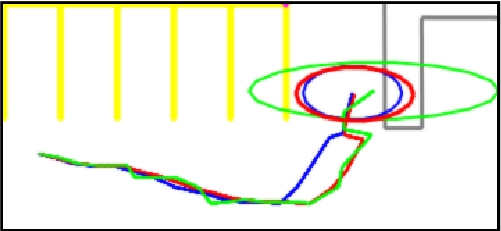

The national project PUVAME [Aycard06] was created to generate solutions to avoid collisions between Vulnerable Road Users and Bus in urban traffic. The project started on october 2003 and ended in april 2006 and had 6 partners.
Experimental Platform
The experimental setup used to evaluate the PUVAME system is composed of 2 distinctive parts :

FIGURE 1: (a) Location of the cameras on the parking

(b) Field-of-view of the cameras projected on the ground.
the ParkView platform that is used to simulate an intersection or a bus
stop. The ParkView platform is composed of a set of six off-board analog
cameras, installed in a car-park setup such as their field-of-view partially
overlap (see figure 1);

FIGURE 2: the cycab vehicle
and a cycab vehicule (figure 2) used to simulate a bus. It is connected
to the ParkView platform by a wireless connection : we can send it
informations about possible collisions and collect odometry data. In this
project, sensors embedded on the cycab were not used.
Experimental Results
In the framework of this project, 2 kinds of work have been performed : the first one on sensor data fusion of offboard camera [Yguel06] and the second one on tracking of pedestrians [Burlet06, Burlet06b].
Sensor Data Fusion
We model the environment perceived by the set of offboard camera with an occupancy grid. This occupancy grid has a size
of 150m x 50m and each cell has a size of 50cms. A partner of the project was in
charge of delivering a detector of pedestrians in image.We use this information to
build a sensor model using information provided by these detectors.

FIGURE 3: The resulting probability that the cells are occupied after the
inference process with two cameras.
Figure 3 shows the same pedestrian seen by two cameras. The red area
corresponds to the most probable position of the pedestrian: this area is the
result of the fusion of the two yellow areas given the two cameras. The 3 green
areas around the pedestrian correspond to the fusion between the occluded area of
one camera with the free area of the other one. The area seen as free by the two
cameras has a very low probability of occupancy. The 4 areas seen as free by one
camera and out of the field of view of the second camera have a low probability
of occupancy.
Afterwards, a method for objects extraction from the grid has been implemented
[Aycard06c].
Tracking of pedestrians
To validate our work on tracking with adaptative IMM, experiments
on the ParkView platform have been carried out. In these experiments, a pedestrian moving in the car park is detected by the set of offboard camera. The
pedestrian describes in this way approximatively hundred trajectories to meet the
needs of our experiment.
Using these trajectories, our adaptive method is used to compute estimates and
the TPM of the IMM is updated for each ten trajectories.

FIGURE 4: Tracking result after 50 trajectories (5 online re-adaptation of the
TPM)
To illustrate the effectiveness of our method, traces of tracking with and
without adaptation of the TPM are showed in figure 4. In these figures, the green
(lightest) line corresponds to the trajectory composed by observations (considered
as the ground truth), the blue(darkest) line is the trajectory described by estimates
computed without adaptation of the TPM and red line corresponds to the trajectory
obtained with estimates computed using our method. The ellipses at the end of the
trajectories give indications on the size of uncertainty on the final position and so
the estimates of the shape.
In figure 4, the pedestrian has achieved fifty random trajectories. Here, the
tracking performed by our method (red trajectory) is significantly improved after
five re-estimations while without adaptation, computed estimates are far from
observations during changes of pedestrian motion.
Also, as adaptation is continuous using on-line data, even if pedestrian
trajectories vary because of changes in car park configuration, for instance if
cars exit the car park, the TPM is automatically readapted to fit this variation.
Thus the computed estimations are always better than using an a priori TPM,
or a learned TPM with a finite set of trajectories since our method is robust to
pedestrian behavior changes.